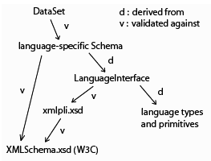

|
Overview of the Phase2 Programming Language Joshua Shinavier, CSCD 499 Spring Quarter 2005 |
[...]
All data and programs in Phase2 are in the form of "atoms" and "sequences", an atom being a typed constant and a sequence being a nested list of atoms.
Unlike primitives, there is a single, predefined set of simple types in Phase2, all of which are drawn from the XML Schema standard (with one exception; see below). For instance, the Schema "string" type is identified with character strings in C, "integer" is identified with the int type, and so on, the idea being to make good use of existing validating and encoding schemes for these types, and to achieve a certain degree of independence from the host language (C/C++).
The only data type with no XML Schema equivalent is the trivial PlaceHolder type and its equivalents. There is a need, in certain applications, for graph elements which help define a larger data structure but otherwise contain no information. As such an element must still be assigned a unique address as an identifier for hashing and comparison functions, PlaceHolders are given out-of-range addresses and trivial associated functions so as to avoid pointless memory allocation [not yet implemented, except as a Schema definition -- see xmlpli.xsd -- and implicitly as the S and K combinator types].
The definition of new types in Phase2 occurs at the application level, and depends on the choice of a reduction algorithm [an easy choice for now, because there's only one]. For instance, combinator semantics lend themselves to the use of ordered tuples for recursive data structures as well as for arrays and other aggregate types. However, from the underlying program's point of view these are not types at all; they're just more sequences.
Phase2 is strongly typed. There are no equivalence or compatibility relationships between simple types, and any mismatch will lead to an exception. There is no generic "pointer" type which can be cast and re-cast to suit the context, as handy as this feature is in C; instead, the functional paradigm is supposed to be flexible enough to make this sort of "cheating" unnecessary. Currently, types are checked dynamically with every call to a primitive: if there is a discrepancy between the type of an argument and of the corresponding input parameter, reduction is abandoned, the term is deallocated and an error term is propagated upward to the calling function. Prospective versions of the language will use type inference to cut down on redundant or unnecessary type checking.
A primitive function in Phase2 is a structure containing a C function pointer together with:
A "purely" functional lanuage is distinguished by the requirement that a function call (i.e. evaluation of an expression) has no "side-effects" which may influence subsequent function calls. Phase2 is not purely functional in that it does allow the importing of primitives with side-effects, but it requires that the effect be limited to one or more of its formal parameters. In other words, a call to function f(x,y) may affect the state of an element passed as x or y, but it may not affect a global element z (by default, Phase2 assumes the worst of its primitives: it assumes that both x and y will be affected. The programmer must mark either or both parameters with a positively-valued "transparency" attribute to state otherwise). This "weak" form of referential transparency is still amenable to formal analysis but permits a Phase2 application to interact with a broader range of programs [defined but not used].
By design, Phase2 does not define any of its own primitives, but gives the programmer the means to arbitrarily import procedures from other sources and treat them as native language constructs. All it needs, in a hypothetical Phase2 universe, is the basic typing information described above, and a way to call the procedure. [In fact, Phase2 can only "import" C or C++ functions for now. As far as other languages go it will be more a matter of treating already-compiled programs as functions, than of "calling a function" in another language].
Phase2's command-line interface is a separable feature of the language. It allows the user to pass arguments to either of a pair of functions defined in the Phase2 client: one for program construction and one for querying or manipulating the programming environment. In both cases the information is passed in the form of an XML element... potentially, any other type of interface could do the same thing.
At the parser level, an expression is a parenthetically nested sequence of dictionary items or special symbols, terminated by a semicolon. To give an expression (that is, its "reduced" counterpart) a name, the semicolon may be preceded by an equality symbol and then the name, e.g.
(token1 token2) token3 = token4;The unorthodox placement of the dictionary assignment command at the end of the expression is aimed at command-line applications for which the programs you write will not necessarily be read as you type them. After all, you might not need to give an expression a name (particularly if you're only interested in the side-effects); the trailing assignment command lets you put that decision off till the last moment. The Phase2 client even defines a special symbol, "$" to grab the result of the last reduction and either give it a name or plug it into the next expression (see below).
Special commands are indicated with a slash plus the name of the command, followed by a whitespace-delimited list of arguments (no parentheses) and terminated by a semicolon, e.g.
/command arg1 arg2;Commands thus indicated do not belong to the program under construction, and are to take immediate effect at parse time. A list of actual commands is given below.
Phase2 is designed to express as much of its basic structure as possible at the level of XML Schema. Sequences are defined at that level, as are data types, primitives, and the data set dictionaries described below. Language constructs are expected to validate against these definitions, which are really the core of the language; everything else is just implementation. The figure illustrates the dependencies between the various document types: 
A Phase2 data set is a dictionary of named expressions defined by the programmer, and is the largest possible unit of data in the language. It may consist of one program or many programs, which may or may not share data.
Apart from
parser expressions ^ implicitly typed parser I/O
+ 2 3;
>> <xs:integer> $: 5 <<
* $ $ = result;
>> <xs:integer> result: 25 <<
Currently supported commands include:
The motivation behind
At present (i.e. using combinator reduction), garbage collection is particularly simple in Phase2 because its basic data structure, the sequence, is a self-contained unit; sequences may not reference each other, although they may reference the same atomic values. For example, a new term:
function argument = result;does not actually contain the terms "function" or "argument"; instead the original terms are either copied in their entirety or (if they were anonymous) simply incorporated into the new term and reduced. The reduced term is then bound to the name "result" in the dictionary. This means that a memory manager really only has to keep track of atoms, and since atoms cannot reference each other, there are no dependencies to worry about. Phase2 further reduces memory management overhead by referencing existing atoms, wherever possible, rather than creating new ones. For instance, there is only one S and one K combinator in memory at a time, and only one instance of each primitive. When terms are copied, you get new references to atoms, but no new atoms.
For now, the "mark and sweep" garbage collector is called manually with the /markandsweep command. You can use "/show env;" to get a before-and-after picture of memory use. /markandsweep instructs each active data set to call a "mark" function on each of its terms, which reverses the sign of the type identifier of any atom referenced by the term. A subsequent call to the "sweep" function then iterates through a global collection of atoms, deallocating all unmarked atoms and unmarking the rest.
Depending on a couple of macro definitions in the "sequence" library, Phase2 will use an alternative, automatic memory reclamation scheme which stores an additional integer field (the "reference count") with each atom. The count is incremented when a new term or subterm references the atom, and decremented when that term is deleted. Again, there's no possibility of circular references in the pure combinator-based model, so this should work fine for now [written but not tested].
Exception handling in Phase2 is very basic at this point, and consists solely of the passing of error codes for bad arguments, unexpected values, and so on. There is no handling of low-level errors, and even a parse error will cause failure. Clearly this is a project for the summer...
Combinators are a kind of variable-free ("point-free") expression which are entirely equivalent to the expressions of lambda calculus. The usual approach is to build them up out of two basic operators, S (for
S (S K K) (S K K) = omega;
>> <P2:Sequence> omega: S (S K K) (S K K) <<
omega omega;
[reduction never terminates]
Let C be a finite set of constants, and A (for "association") a function from C×C to C. If Aab = c, we'll say that a is "associated with c through b". If we treat A as an infix operator ^ we get a sort of multiplication: a ^ b = Aab = c. distinguished null element similar behavior global hash table Compatibility with combinators, which have essentially the same behavior. Treating atoms as
(λ*xy.Axy)at the variable level can be used to embed association in an antidiagrammatic order function expression, e.g.
show map (England capital_city);
print integer 42;, where print ^ integer = an integer-specific print function. Function application runs in one direction, association in the other.
interactive "conversational" style cues / prompting
[root@localhost Phase2_v0.4]# ./phase2
Phase2 version 0.4, Copyright (C) 2005 Joshua Shinavier.
The Phase2 programming language comes with ABSOLUTELY NO WARRANTY. This is free
software, and you are welcome to redistribute it under certain conditions;
type '/show license;' for details.
/load prims data/primitives.xml;
prims:double__multiply = *;
>> <PrimitiveReference> *: double__multiply <<
3.1415 = pi;
>> <xs_double> pi: 3.1415 <<
* 2.0 pi;
>> <xs_double> $: 6.283 <<
* $ = circumference;
>> <P2_Sequence> circumference: * $ <<
/load combs data/combinators.xml;
combs:C combs:S combs:I * = sq;
>> <P2_Sequence> sq: S * (S K K) <<
combs:B (* pi) sq = area;
>> <P2_Sequence> area: S (K (* pi)) (S * (S K K)) <<
0.5 = radius;
>> <xs_double> radius: 0.5 <<
circumference radius;
>> <xs_double> $: 3.1415 <<
area radius;
>> <xs_double> $: 0.785375 <<
/show dict;
Dictionary:
<xs_double> pi
<xs_double> radius
<Sequence> circumference
<xs_double> $
<PrimitiveReference> *
<Sequence> sq
<Sequence> area
/save data/circle.xml;
prims:system "cat data/circle.xml";
<P2_DataSet>
<xs_double name="pi" id="ref-2">3.1415</xs_double>
<xs_double name="radius">0.5</xs_double>
<Sequence sequenceType="immediate" name="circumference">
<PrimitiveReference ref="ref-1"/>
<xs_double>6.283</xs_double>
</Sequence>
<xs_double name="$">0.785375</xs_double>
<PrimitiveReference name="*" id="ref-1">double__multiply</PrimitiveReference>
<Sequence sequenceType="immediate" name="sq">
<S/>
<PrimitiveReference ref="ref-1"/>
<Sequence sequenceType="immediate">
<S/>
<K/>
<K/>
</Sequence>
</Sequence>
<Sequence sequenceType="immediate" name="area">
<S/>
<Sequence sequenceType="immediate">
<K/>
<Sequence sequenceType="immediate">
<PrimitiveReference ref="ref-1"/>
<xs_double ref="ref-2"/>
</Sequence>
</Sequence>
<Sequence sequenceType="immediate">
<S/>
<PrimitiveReference ref="ref-1"/>
<Sequence sequenceType="immediate">
<S/>
<K/>
<K/>
</Sequence>
</Sequence>
</Sequence>
</P2_DataSet>
>> <xs_string> $: <<
/show env;
3 active data set(s): combs, default, prims
"Mark and sweep" buffer contains 85 items.
/markandsweep;
/show env;
3 active data set(s): combs, default, prims
"Mark and sweep" buffer contains 52 items.
/exit;
[root@localhost Phase2_v0.4]#